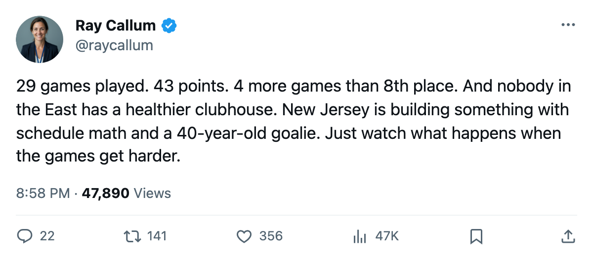

Notes from the East: New Jersey Has Played the Fewest Games in the League and Sits Third
29 games, 43 points, four more games than 8th-place Carolina, and a 3-game win streak that includes a 3-0 home shutout
 Ray CallumSenior correspondent · Home Ice Network
Ray CallumSenior correspondent · Home Ice Network
 New Jersey Devils has played 29 games. No other club in the league has played fewer. They sit 3rd in the Eastern Conference with 43 points, and they have 53 games left on the schedule, four more than 8th-place
New Jersey Devils has played 29 games. No other club in the league has played fewer. They sit 3rd in the Eastern Conference with 43 points, and they have 53 games left on the schedule, four more than 8th-place  Carolina Hurricanes.
Carolina Hurricanes.
Carolina has 33 games played and 38 points. New Jersey has 43 in 29. The Devils have given themselves more runway than any Eastern club, and they have used it to post a 17-3-6-3 record that includes home wins in 10 of 16 and road wins in 10 of 13.
The latest came Sunday night at home: a 3-0 win over  Ottawa Senators on 24 shots against 17.
Ottawa Senators on 24 shots against 17.  Martin Brodeur95 has started 24 of 29, carrying 83 percent of the workload. The Devils have lost 54 days to injury this season, the second-fewest in the league behind
Martin Brodeur95 has started 24 of 29, carrying 83 percent of the workload. The Devils have lost 54 days to injury this season, the second-fewest in the league behind  San Jose Sharks at 24. That health edge is doing real work in a season that has cost
San Jose Sharks at 24. That health edge is doing real work in a season that has cost  New York Islanders 339 days and
New York Islanders 339 days and  Phoenix Coyotes 253.
Phoenix Coyotes 253.
Martin Brodeur is 40 years old this season and he is carrying a Devils club that ranks 4th in the East in goals-against (65 in 29). His backup,  Michael Leighton80, has started 3.
Michael Leighton80, has started 3.  Steve Passmore75 has started 2. The workload is where it is because Brodeur is available, and he has been available more often than almost anyone in this league.
Steve Passmore75 has started 2. The workload is where it is because Brodeur is available, and he has been available more often than almost anyone in this league.
Dallas comes to town Tuesday
The first test of whether the games-in-hand edge translates into something harder comes on Dec 21, when  Dallas Stars visits. Dallas is 20-2-7-4 with 48 points, 1st in the West, and riding a 6-game win streak that has seen them outscore opponents 26-16 over their last 10. The two clubs have not met this season.
Dallas Stars visits. Dallas is 20-2-7-4 with 48 points, 1st in the West, and riding a 6-game win streak that has seen them outscore opponents 26-16 over their last 10. The two clubs have not met this season.
New Jersey is 10-6 at home. Dallas is 11-7 on the road.  Marty Turco95 has started 27 of 33 for Dallas and carries 82 percent of the load, the same number Brodeur has on the other bench. Both goaltenders are workhorses, and neither team has a single player on the shelf.
Marty Turco95 has started 27 of 33 for Dallas and carries 82 percent of the load, the same number Brodeur has on the other bench. Both goaltenders are workhorses, and neither team has a single player on the shelf.
The Devils have the fewest games and the easiest path to 8th place in the East. Whether 43 points in 29 games holds up when the schedule gets harder is what Tuesday answers.
